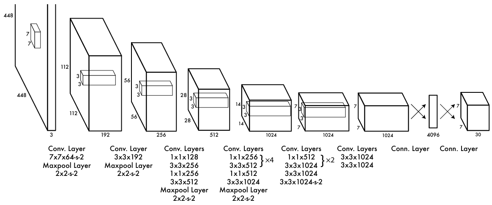
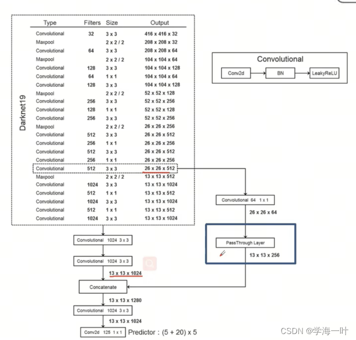
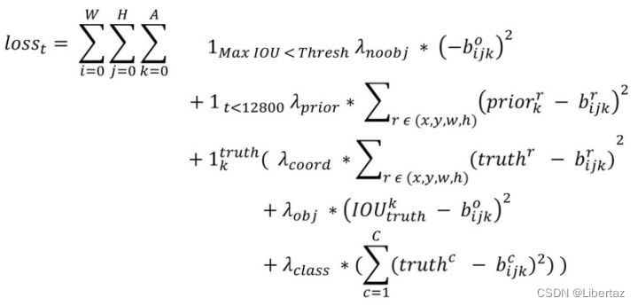
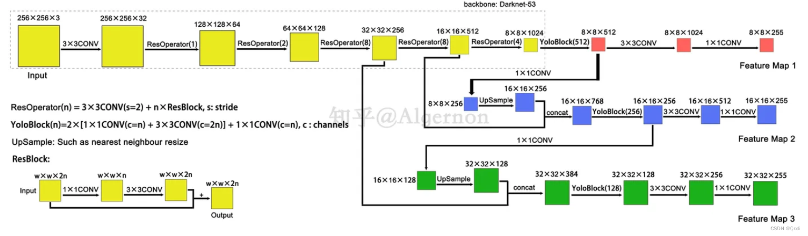
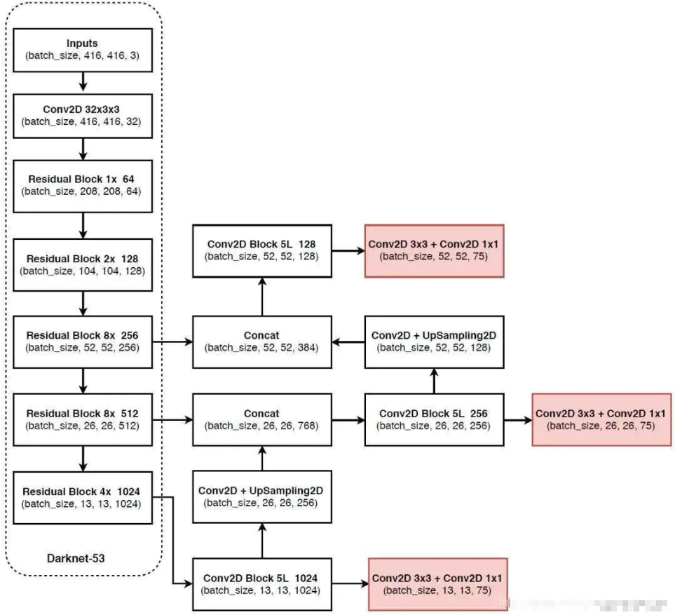
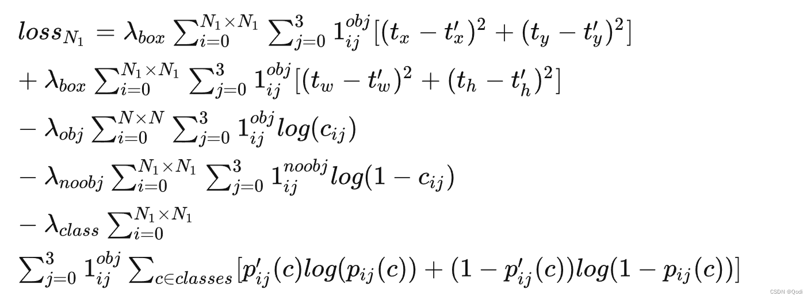

D2L-4:Yolo v1-v5对比
什么是YOLO?
YOLO（You Only Look Once）是一种一阶段的（one-stage）目标检测模型，它通过一次前向传递就可以同时完成目标的位置和类别预测。YOLO的设计理念是直接在图像上运行一次卷积操作，通过将图像分成网格（grid），每个网格负责检测其中心范围内的对象，从而输出边界框（bounding box）和类别概率。
基本概念
单阶段/两阶段
二阶段检测算法：如Faster R-CNN，首先利用区域提议网络（Region Proposal Network, RPN）生成一系列候选区域，然后对这些区域进行分类和边界框回归。这种方法分为两个明显的阶段：第一阶段提取感兴趣的区域，第二阶段进行分类和定位。
一阶段检测算法：如YOLO和SSD，直接在网络中同时预测类别和边界框的位置，无需单独生成候选区域。这种一体化的设计简化了处理流程，提高了检测速度。
准确率：二阶段检测算法通常具有更高的精度。其原因在于第一阶段的区域提议网络能够精细地提取感兴趣的区域，从而减少了误识别率和漏识别率。相比之下，一阶段检测算法由于省略了候选区域的生成过程，可能在定位和分类上稍逊一筹。
处理速度：一阶段检测算法在处理速度上具有明显优势。因为它们省略了候选区域的生成过程，可以直接对图像进行一次前向传播得到检测结果。这使得一阶段检测算法更适合实时检测场景，如视频目标检测。
非极大值抑制
非极大值抑制（Non-Maximum Suppression）方法从所有检测到的候选框中，按照置信度得分进行排序，选取置信度最高的候选框作为基准。然后，计算剩余候选框与基准框的重叠面积（通常用交并比IoU表示），如果重叠面积大于设定的阈值，则认为该候选框与基准框高度重叠，从而将其抑制，不保留。通过这样的方式，NMS可以过滤掉大部分冗余的候选框，只保留最有可能包含目标的框。
锚框
锚框（Anchor Box）在目标检测中的主要目的是提供一组预定义的边界框，这些边界框是在输入图像上根据一定的规则生成的，通常包括不同的尺寸和宽高比。锚框的作用包括：
- 提供候选框：锚框作为候选框，帮助模型预测目标物体的位置和类别。
- 提高模型准确性：通过在输入图像中采样大量的区域，并判断这些区域中是否包含感兴趣的目标，然后调整区域边界以更准确地预测目标的真实边界框（ground-truth bounding box）。
- 类聚对象位置：锚框可以根据数据集的对象位置类聚出来，用作预测框计算的参考，使得算法在“精修或微调”时能够更快收敛，从而提高检测效果。
- 分类和微调：通过设定众多的候选框，模型可以对这些候选框进行分类和微调，找到目标中最接近的真实框，实现目标检测。
Yolo v1

Yolo v2


Yolo v3



Yolo v4
Yolo v5
Model | Anchor | Input | Backbone | Neck | Predict/ Train |
|---|---|---|---|---|---|
YOLOv1 | 锚框（7*7grids，2 anchors） | resize(448*448*3)： 训练是224*224，测试是448*448； | GoogLeNet（24*Conv+2*FC+reshape；Dropout防止过拟合；最后一层使用线性激活函数，其余层都使用ReLU激活函数）； | 无 | IOU_Loss、nms；一个网格只预测了2个框，并且都属于同一类；全连接层直接预测bbox的坐标值； |
YOLOv2 | 锚框（13*13grids，5 anchors：通过k-means选择先验框） | resize（416*416*3）：416/32=13，最后得到的是奇数值有实际的中心点；在原训练的基础上又加上了（10个epoch）的448x448高分辨率样本进行微调； | Darknet-19（19*Conv+5*MaxPool+AvgPool+Softmax；没有FC层，每一个卷积后都使用BN和ReLU防止过拟合（舍弃dropout）；提出passthrough层：把高分辨率特征拆分叠加大到低分辨率特征中，进行特征融合，有利于小目标的检测）； | 无 | IOU_Loss、nms；一个网络预测5个框，每个框都可以属于不同类；预测相对于anchor box的偏移量；多尺度训练（训练模型经过一定迭代后，输入图像尺寸变换）、联合训练机制； |
YOLOv3 | 锚框（13*13grids，9 anchors：三种尺度*三种宽高比） | resize（608*608*3） | Darknet-53（53*Conv，每一个卷积层后都使用BN和Leaky ReLU防止过拟合，残差连接）； | FPN（多尺度检测，特征融合） | IOU_Loss、nms；多标签预测（softmax分类函数更改为logistic分类器）； |
YOLOv4 | 锚框 | resize（608*608*3）、Mosaic数据增强、SAT自对抗训练数据增强 | CSPDarknet53（CSP模块：更丰富的梯度组合，同时减少计算量、跨小批量标准化（CmBN）和Mish激活、DropBlock正则化（随机删除一大块神经元）、采用改进SAM注意力机制：在空间位置上添加权重）； | SPP（通过最大池化将不同尺寸的输入图像变得尺寸一致）、PANnet（修改PAN，add替换成concat） | CIOU_Loss、DIOU_nms；自对抗训练SAT：在原始图像的基础上，添加噪音并设置权重阈值让神经网络对自身进行对抗性攻击训练；类标签平滑：将绝对化标签进行平滑（如：[0,1]→[0.05,0.95]），即分类结果具有一定的模糊化，使得网络的抗过拟合能力增强； |
YOLOv5 | 锚框 | resize（608*608*3）、Mosaic数据增强、自适应锚框计算、自适应图片缩放 | CSPDarknet53（CSP模块，每一个卷积层后都使用BN和Leaky ReLU防止过拟合，Focus模块）； | SPP、PAN | GIOU_Loss、DIOU_Nms；跨网格匹配（当前网格的上、下、左、右的四个网格中找到离目标中心点最近的两个网格，再加上当前网格共三个网格进行匹配）； |
YOLOX | 无锚框 | resize（608*608*3） | Darknet-53 | SPP、FPN | CIOU_Loss、DIOU_Nms、Decoupled Head、SimOTA标签分配策略； |
YOLOv6 | 无锚框 | resize（640*640*3） | EfficientRep Backbone（Rep算子） | SPP、Rep-PAN Neck | SIOU_Loss、DIOU_Nms、Efficient Decoupled Head、SimOTA标签分配策略； |
YOLOv7 | 锚框 | resize（640*640*3） | Darknet-53（CSP模块替换了ELAN模块；下采样变成MP2层；每一个卷积层后都使用BN和SiLU防止过拟合）； | SPP、PAN | CIOU_Loss、DIOU_Nms、SimOTA标签分配策略、带辅助头的训练（通过增加训练成本，提升精度，同时不影响推理的时间）； |
YOLOv8 | 无锚框 | resize（640*640*3） | Darknet-53（C3模块换成了C2F模块） | SPP、PAN | CIOU_Loss、DFL_Loss、DIOU_Nms、TAL标签分配策略、Decoupled Head； |
参考文献
[1] Redmon J, Divvala S, Girshick R, et al. You only look once: Unified, real-time object detection[C]//Proceedings of the IEEE conference on computer vision and pattern recognition. 2016: 779-788.
[2] Redmon J, Farhadi A. YOLO9000: better, faster, stronger[C]//Proceedings of the IEEE conference on computer vision and pattern recognition. 2017: 7263-7271.
[3] Redmon J, Farhadi A. Yolov3: An incremental improvement[J]. arxiv preprint arxiv:1804.02767, 2018.
[4] YOLO系列算法全家桶——YOLOv1-YOLOv9详细介绍 ！！
[5] YOLOv4网络详解
[6] YOLOv5网络详解